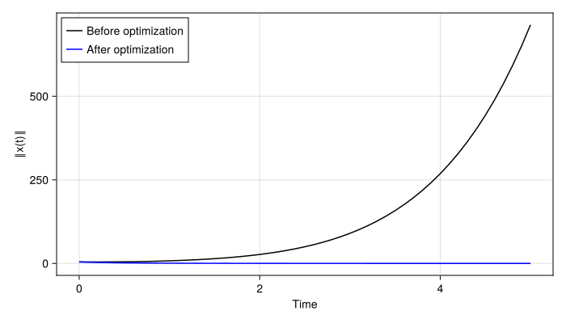
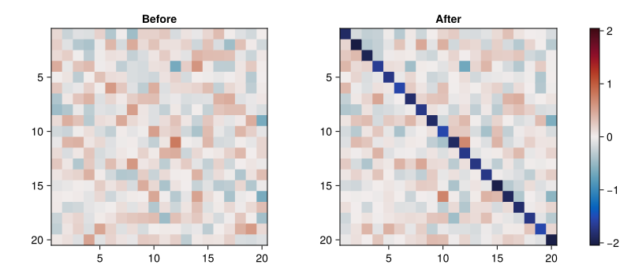
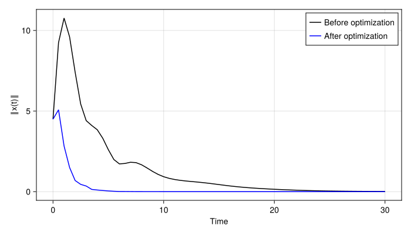
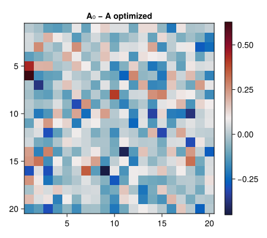

Stability-optimized linear systems
We use the SSA as a differentiable objective for improving the stability of a linear dynamical system. A quadratic regularizer keeps the optimized matrix near its initial value.
Initialization
using CairoMakie
using Calculus
using LinearAlgebra
using Optim
using NLSolversBase: only_fg!
using Random
using SmoothedSpectralAbscissa
const SSA = SmoothedSpectralAbscissa
CairoMakie.activate!(type="svg")
Random.seed!(0);Linear dynamics
For a system $dx/dt = A x$, the solution is $x(t) = \exp(A t) x_0$.
function run_linear_dyn(A::Matrix{R}, x0::Vector{R}, tmax::Real, dt::Real=0.01) where R
times = range(0.0, tmax; step=dt)
states = Matrix{R}(undef, length(x0), length(times))
for (k, t) in enumerate(times)
states[:, k] = exp(A * t) * x0
end
norms = [norm(state) for state in eachcol(states)]
return times, states, norms
end;Optimize all matrix elements
The objective is $SSA(A) + (λ/2) \|A-A_0\|_F^2$. Its first term is evaluated using reusable SSA storage and an analytical gradient.
function objective_and_grad_simple(x::Vector{R}, grad::Union{Nothing,Vector{R}},
n::Integer, ssa_eps::R, alloc::SSA.Workspace) where R
A = reshape(x, n, n)
gradmat = nothing
if !isnothing(grad)
gradmat = similar(A)
end
value = SSA.ssa(A, ssa_eps; workspace=alloc, grad=gradmat)
if !isnothing(grad)
copyto!(grad, vec(gradmat))
end
return value
end;
n = 20
A_full = randn(n, n) / sqrt(n) + 0.2I
x0 = randn(n)
y0_full = vec(copy(A_full))
alloc_full = SSA.Workspace(n)
ssa_eps = 0.001
λ_full = 0.5 / n
function objfun_full!(F, G, y)
value = objective_and_grad_simple(y, G, n, ssa_eps, alloc_full)
difference = y - y0_full
value += 0.5 * λ_full * sum(abs2, difference)
if !isnothing(G)
G .+= λ_full .* difference
end
return value
end
opt_full = optimize(only_fg!(objfun_full!), copy(y0_full), BFGS(),
Optim.Options(iterations=100))
A_full_opt = reshape(Optim.minimizer(opt_full), n, n)
times, _, norms_before = run_linear_dyn(A_full, x0, 5.0, 0.1)
_, _, norms_after = run_linear_dyn(A_full_opt, x0, 5.0, 0.1);Compare the same initial condition before and after optimization.
fig = Figure(size=(700, 400))
ax = Axis(fig[1, 1]; xlabel="Time", ylabel="‖x(t)‖")
lines!(ax, times, norms_before; color=:black, label="Before optimization")
lines!(ax, times, norms_after; color=:blue, label="After optimization")
axislegend(ax; position=:lt)
fig
The matrix comparison uses a shared color scale. Matrix rows run from top to bottom, with columns along the horizontal axis.
color_limit = max(maximum(abs, A_full), maximum(abs, A_full_opt))
fig = Figure(size=(800, 350))
ax_before = Axis(fig[1, 1]; title="Before", aspect=DataAspect(), yreversed=true)
ax_after = Axis(fig[1, 2]; title="After", aspect=DataAspect(), yreversed=true)
heatmap!(ax_before, permutedims(A_full); colormap=:balance,
colorrange=(-color_limit, color_limit))
hm = heatmap!(ax_after, permutedims(A_full_opt); colormap=:balance,
colorrange=(-color_limit, color_limit))
Colorbar(fig[1, 3], hm)
fig
Optimize while preserving the diagonal
A stable, non-normal matrix can amplify activity temporarily. Here we optimize its off-diagonal entries while preserving its original diagonal.
function rand_nonnormal(rng::AbstractRNG, n::Integer, upper_diagonal::Real=1.01)
A = randn(rng, n, n) / sqrt(n)
A -= (SSA.spectral_abscissa(A) + 0.2) * I
F = schur(A)
transform = diagm(0 => ones(n), 1 => fill(upper_diagonal, n - 1))
return F.Z * (transform * F.T / transform) * F.Z'
end;Reconstruct a separate matrix to enforce the diagonal constraint. Changing a view into the optimizer's vector here would invalidate its objective evaluations.
function objective_and_grad_nodiag(x::Vector{R}, grad::Union{Nothing,Vector{R}},
n::Integer, ssa_eps::R, alloc::SSA.Workspace, A0::Matrix{R}) where R
A = copy(reshape(x, n, n))
for i in 1:n
A[i, i] = A0[i, i]
end
gradmat = nothing
if !isnothing(grad)
gradmat = similar(A)
end
value = SSA.ssa(A, ssa_eps; workspace=alloc, grad=gradmat)
if !isnothing(grad)
for i in 1:n
gradmat[i, i] = 0.0
end
copyto!(grad, vec(gradmat))
end
return value
end;
A_fixed = rand_nonnormal(MersenneTwister(1), n, 1.0)
y0_fixed = vec(copy(A_fixed))
alloc_fixed = SSA.Workspace(n)
λ_fixed = 1.0 / n^2
function objfun_fixed!(F, G, y)
value = objective_and_grad_nodiag(y, G, n, ssa_eps, alloc_fixed, A_fixed)
difference = y - y0_fixed
value += 0.5 * λ_fixed * sum(abs2, difference)
if !isnothing(G)
G .+= λ_fixed .* difference
end
return value
end
opt_fixed = optimize(only_fg!(objfun_fixed!), copy(y0_fixed), BFGS(),
Optim.Options(iterations=100))
A_fixed_opt = reshape(Optim.minimizer(opt_fixed), n, n)
times, _, norms_before = run_linear_dyn(A_fixed, x0, 30.0, 0.5)
_, _, norms_after = run_linear_dyn(A_fixed_opt, x0, 30.0, 0.5);Compare transient amplification and relaxation.
fig = Figure(size=(700, 400))
ax = Axis(fig[1, 1]; xlabel="Time", ylabel="‖x(t)‖")
lines!(ax, times, norms_before; color=:black, label="Before optimization")
lines!(ax, times, norms_after; color=:blue, label="After optimization")
axislegend(ax; position=:rt)
fig
The difference plot makes the fixed diagonal visible.
fig = Figure(size=(450, 400))
ax = Axis(fig[1, 1]; title="A₀ − A optimized", aspect=DataAspect(), yreversed=true)
hm = heatmap!(ax, permutedims(A_fixed - A_fixed_opt); colormap=:balance)
Colorbar(fig[1, 2], hm)
fig
Check the gradients
Finite differences provide an independent check of the analytical gradients. Use small matrices for these checks; numerical differentiation of a large optimization problem is expensive.
function test_gradient(objective, y)
analytical = similar(y)
objective(1.0, analytical, copy(y))
numerical = Calculus.gradient(x -> objective(1.0, nothing, x), copy(y))
return analytical, numerical
end;This page was generated using Literate.jl.